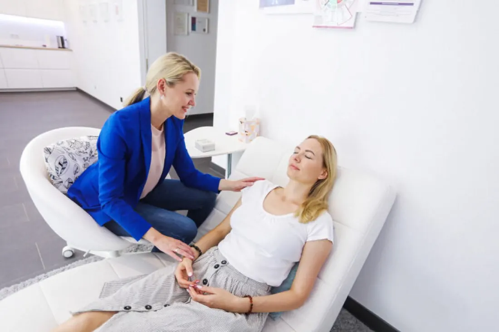

Du möchtest dich anders fühlen – aber weißt nicht, wie du das verändern kannst?
Vielleicht gibt es Situationen, in denen du immer wieder dasselbe fühlst.

Vielleicht kennst du das:
„Ich fühle mich viel, viel besser.“
Monatelang starke Schmerzen, schlaflose Nächte, ohne Schmerzmittel ging nichts mehr. Eine Klientin erzählt, wie es ihr nach der ersten Sitzung ging.
5,0 · 88 Google-BewertungenDein Gefühl lässt sich nicht einfach mit Vernunft verändern.
Du musst nicht gegen deine Gefühle kämpfen. Wir arbeiten nicht nur daran, was du denkst – sondern daran, wie du eine Situation innerlich erlebst.

Wir schauen auf eine konkrete Situation, die dich belastet.
Mit meiner psycho-emotionalen Methode arbeiten wir gezielt mit deinem Gefühlszustand – unter anderem mit inneren Bildern und Visualisierungen.
Du darfst dich wieder freier fühlen.
Vielleicht hast du dich längst an die Angst, die Anspannung oder das ständige Funktionieren gewöhnt. Manchmal beginnt Veränderung damit, dass du etwas anders erleben darfst.
Themen, bei denen ich häufig unterstütze.
Ängste & Panik
Wenn Situationen immer wieder Angst, Anspannung oder körperliche Reaktionen auslösen.
Innere Unruhe & Überforderung
Wenn du ständig unter Druck stehst und nicht abschalten kannst.
Selbstwert & Selbstvertrauen
Wenn du dich immer wieder infrage stellst oder dir wenig zutraust.
Beziehungen & Konflikte
Wenn bestimmte Konflikte oder emotionale Muster immer wiederkehren.
Depressive Stimmung
Wenn du dich häufig traurig, leer oder antriebslos fühlst.
Psychosomatische Beschwerden
Etwa Schmerzen oder Hautbeschwerden – wenn medizinisch abgeklärt ist und emotionale Belastungen eine Rolle spielen können.
Vier Schritte zu einem neuen inneren Erleben.
Kennenlernen
Im Erstgespräch erzählst du, was dich belastet – und wir schauen, ob mein Coaching zu deinem Anliegen passt.
Verstehen
Wir schauen auf die Situation und dein emotionales Erleben – ohne die ganze Vergangenheit zu analysieren.
Verändern
Wir arbeiten gezielt mit deinem Gefühlszustand und inneren Bildern – so kann eine neue innere Erfahrung entstehen.
Neu erleben
Du nimmst die Situation anders wahr – und neue Reaktionen und Handlungsmöglichkeiten können entstehen.
Aus meiner Erfahrung brauchen Erwachsene häufig 3–6 Sitzungen, um ein emotionales Thema gezielt zu bearbeiten. Jeder Mensch ist individuell – wir arbeiten so lange, wie es für deine Veränderung sinnvoll ist.
Du musst noch keine Lösung haben.
Erzähl mir einfach, was dich gerade belastet. Im Erstgespräch schauen wir gemeinsam, ob und wie ich dich unterstützen kann.
Du entscheidest danach in Ruhe, ob du den nächsten Schritt gehen möchtest.